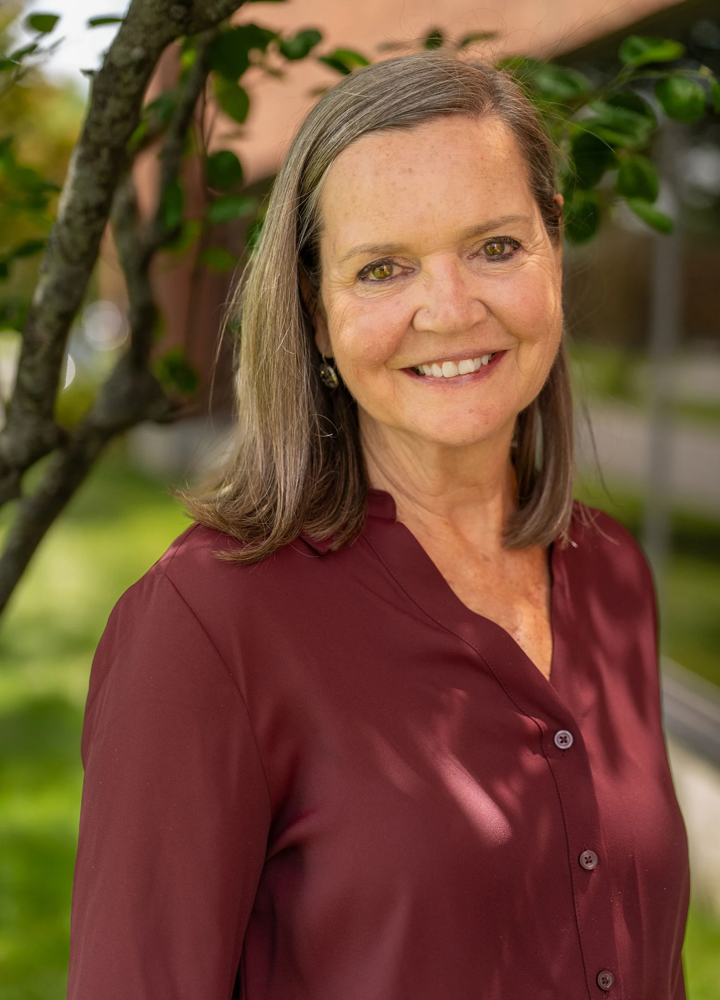

Portrait collection · Blue Cross Vermont · 2026
Blue Cross Vermont portraits.
Senior team headshots and a portrait of Lindsay Segale, made for public profiles and organizational storytelling.
7 portraits in this collection.
Senior team and Lindsay Segale
Six senior team headshots and one portrait of Lindsay Segale.


The system behind the portraits
Consistent lighting and careful editing keep the headshots connected while preserving each person’s expression and posture.